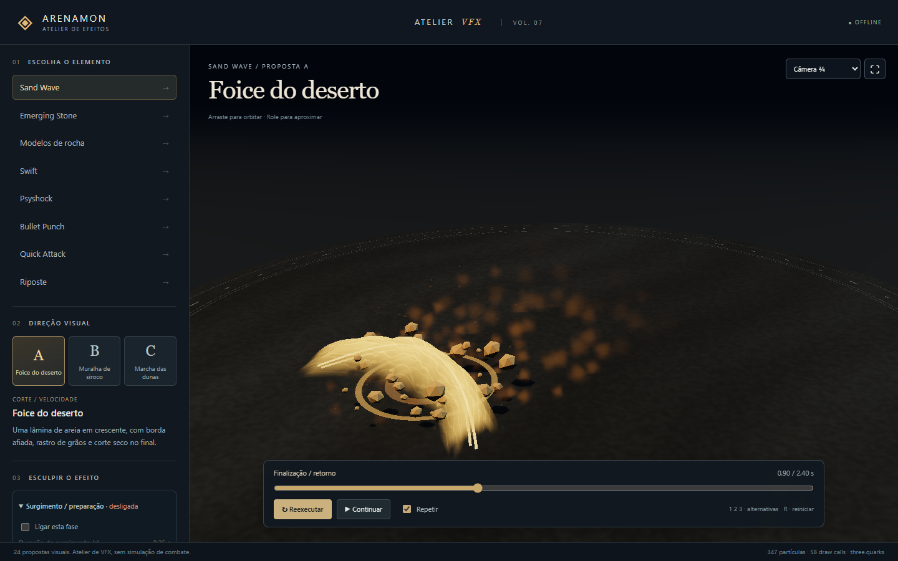
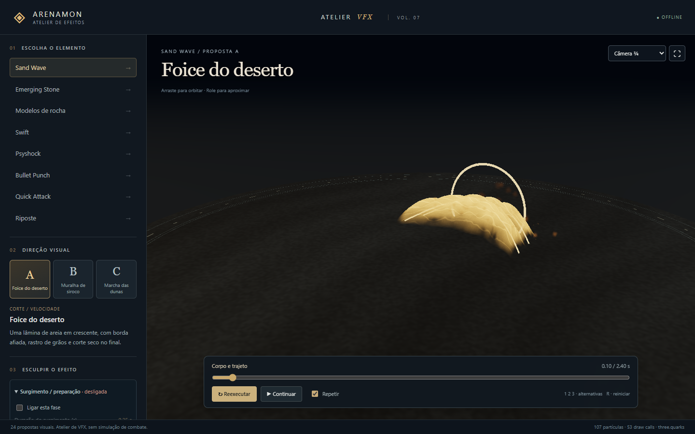
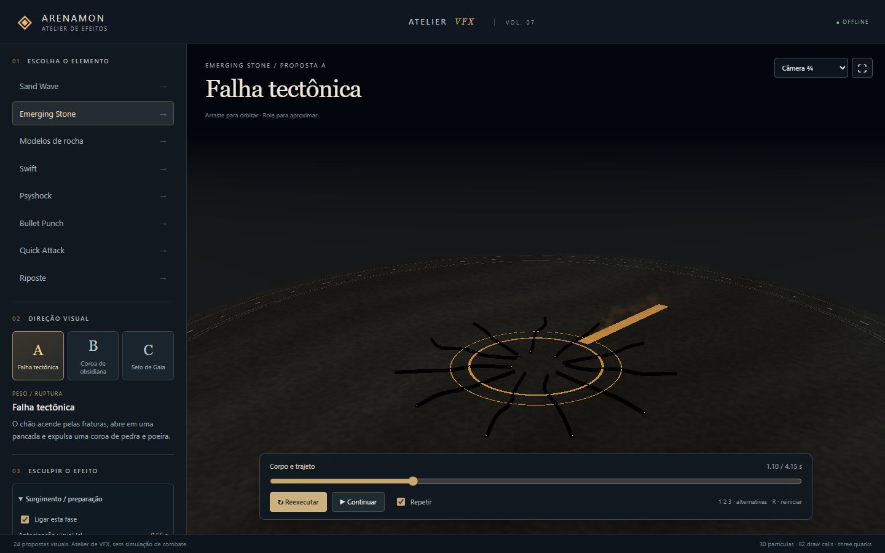
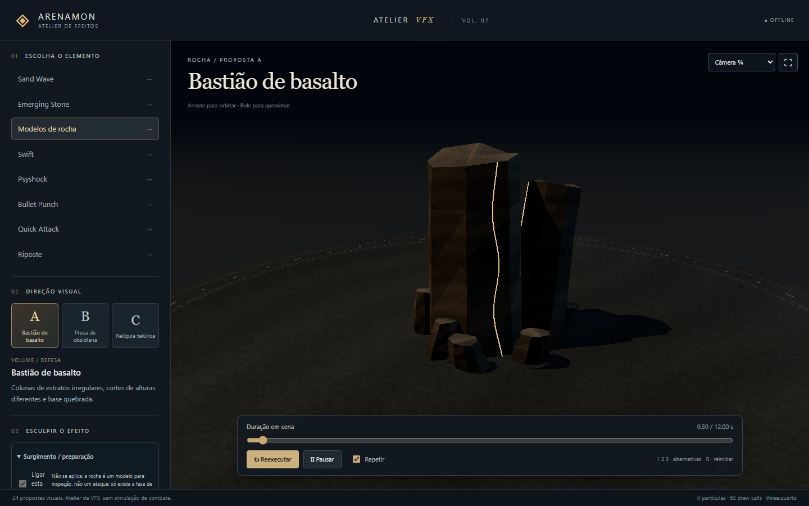

Capturas feitas pelo teste de navegador (prototypes/sand-stone-lab/phases.browser.mjs, Edge offline). Verificação técnica: a aprovação visual é do responsável.

Sand Wave, valores padrão (o visual não mudou: um golden gravado antes da mudança confere os números).

Sand Wave com a fase «Surgimento / preparação» desligada (o grupo aparece esmaecido e a legenda pula direto para «Corpo e trajeto») e o disparo em «Argola».

Emerging Stone com 0,8 s de trajeto subterrâneo: o sulco de energia anda da origem até o alvo antes da rocha emergir.

Rocha: inspeção de objeto, não um ataque; as outras cinco fases aparecem desabilitadas com a razão.